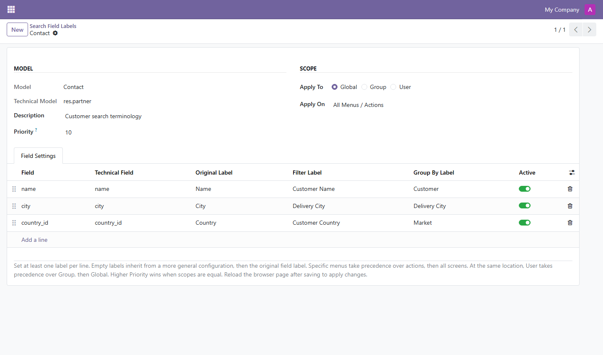
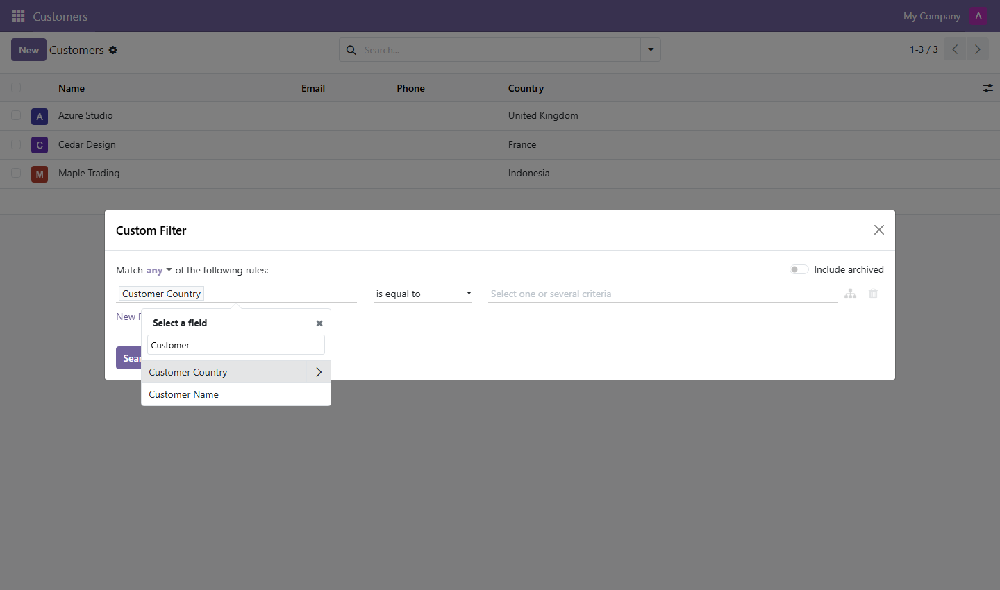
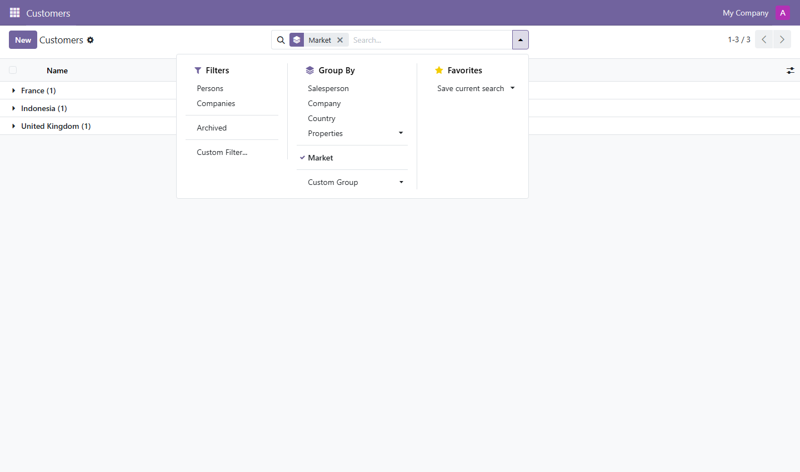

Give custom filters and groups the names your team understands.
Configure separate field labels for Add Custom Filter and Add Custom Group. Choose a model, add its fields, and decide who sees each label and where it applies. For example, show Sales PIC when users select the Salesperson field.
CENTRAL CONFIGURATION
Select the model in the header and maintain field rows in one place. Technical field names in the picker and the original label alongside each row make the selection clear.
SEPARATE LABELS
Use a Filter Label, a Group By Label, or both. Labels also appear in newly generated search tags. Custom filters support related field paths; date groups keep their standard intervals.
AUDIENCE
Share labels with all internal users, members of selected groups, or selected internal users. Multiple configurations can apply to the same model.
LOCATION
Apply labels across the model, to one window action, or to one exact menu. Two menus that share an action can have different labels.
Maintain field labels under Settings › Technical › Database Structure › Search Field Labels.

The custom filter field selector uses the Filter Label for the current user and screen.

After adding a custom group, the configured Group By Label appears in the selected group and search tag. Here, Country is grouped as Market.

1. Install. Install Search Field Labels for your Odoo version and enable developer mode. A Settings administrator manages the configuration.
2. Choose the scope. Open Settings › Technical › Database Structure › Search Field Labels. Create a configuration, select a model, and set Apply To and Apply On.
3. Add field rows. Under Field Settings, select fields by their technical names and enter a Filter Label, Group By Label, or both. Save the configuration.
4. Refresh and use. Reload the browser page, open the target menu or action, and add a custom filter or group.
Filter and Group By labels are resolved independently. The most specific matching configuration supplies each non-empty label.
FIRST: LOCATION
Menu › Action › All
THEN: AUDIENCE
User › Group › Global
THEN: PRIORITY
Higher number wins
Equal priority uses the newest configuration. An empty label falls back to the next matching configuration, then Odoo's original label. Deactivate a field row or archive a configuration to remove its labels. Menu rules match the exact selected menu; they do not extend to parent menus. Configurations apply across companies.
Add Custom Filter and Add Custom Group use your configured field labels, including related fields in custom filters and newly created search tags. Existing preset filters and groups, form and list labels, and import and export labels stay the same.
Users with Settings administration access can create and manage configurations. Choose whether labels apply to all internal users, selected groups, or selected users. Existing field access permissions still apply.
Custom labels support Odoo translations. Saved favorite names remain as you named them, and previously saved descriptions keep their existing text. After changing labels or user and group memberships, refresh the page before adding a new filter or group.
Yes. Create a separate configuration for each menu and choose Specific Menu under Apply On. Each selected menu can then show its own labels, even when both use the same action.
herianto.oy@gmail.com — Include your Odoo version, label configuration and steps to reproduce the issue.